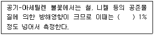
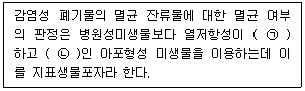
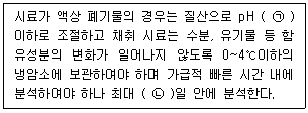
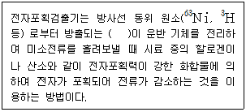
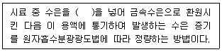

폐기물처리산업기사 (2020-08-22 기출문제)
1과목: 폐기물개론
1. 폐기물 자원화하는 방법 중 에너지 회수방법에 속하는 것은?
- 물질 회수
- 직접열 회수
- 추출형 회수
- 변환형 회수
(정답률: 70%)

2. 부피 100m3인 폐기물의 부피를 10m3로 압축하는 경우 압축비는?
- 0.1
- 1
- 10
- 90
(정답률: 71%)
3. 폐기물의 성상 분석 절차로 가장 적합한 것은?
- 밀도측정 – 물리적 조성분석 – 건조 – 분류(타는 물질, 안타는 물질)
- 밀도측정 – 건조 – 화학적 조정분석 – 전처리(절단 및 분쇄)
- 전처리(절단 및 분쇄) - 밀도측정 – 화학적조정분석 – 분류(타는 물질, 안타는 물질)
- 전처리(절단 및 분쇄) 건조 – 물리적 조성분석 – 발열량 측정
(정답률: 72%)
4. 건조된 고형물의 비중이 1.65이고 건조 전 슬러지의 고형분 함량이 35%, 건조중량이 400kg이라 할 때 건조 전 슬러지의 비중은?
- 1.02
- 1.16
- 1.27
- 1.35
(정답률: 43%)
5. 관거(pipe)를 이용한 폐기물 수송의 특징과 가장 거리가 먼 것은?
- 10km이상의 장거리 수성에 적당하다.
- 잘못 투입된 폐기물의 회수는 곤란하다.
- 조대폐기물은 파쇄, 압축 등의 전처리를 해야한다.
- 화재, 폭발 등의 사고 발생 시 시스템 전체가 미비되며 대체 시스템의 전환이 필요하다.
(정답률: 74%)
6. 함수율 80%인 폐기물 10ton을 건조시켜 함수율 30%로 만들 경우 감소하는 폐기물의 중량(ton)은? (단, 비중 = 1.0)
- 2.6
- 2.9
- 3.2
- 3.5
(정답률: 53%)
7. 적환장에 대한 설명으로 가장 거리가 먼 것은?
- 최종 처리장과 수거지역의 거리가 먼 경우 사용하는 것이 바람직하다.
- 폐기물의 수거와 운반을 빈리하는 기능을 한다.
- 주거지역의 밀도가 낮을 때 적환장을 설치한다.
- 적환장의 위치는 수거하고자 하는 개별적 고형물 발생지역의 하중 중심과 적절한 거리를 유지하여야 한다.
(정답률: 42%)
8. 쓰레기 재활용 측면에서 가장 효과적인 수거 방법은?
- 문전수거
- 타종수거
- 분리수거
- 혼합수거
(정답률: 61%)
9. 도시폐기물 최종 분석 결과를 Dulong공식으로 발열량을 계산하고자 할 때 필요하지 않은 성분은?
- H
- C
- S
- Cl
(정답률: 71%)
10. 물질회수를 위한 선별방법 중 플라스틱에서 종이를 선별할 수 있는 방법으로 가장 적절한 것은?
- 와전류 선별
- Jig 선별
- 광학 선별
- 정전기적 선별
(정답률: 60%)
11. 쓰레기를 파쇄할 경우 발생하는 이점으로 가장 거리가 먼 것은?
- 일반적으로 압축 시 밀도 증가율이 크다.
- 매립 시 폐기물이 잘 섞여서 혐기성을 유지하므로 메탄 발생량이 많아진다.
- 조대쓰레기에 의한 소각로의 손상을 방지한다.
- 고밀도 매립이 가능하다.
(정답률: 59%)
12. 난분해성 유기화합물의 생물학적 반응이 아닌 것은?
- 탈수소반응(가수분해반응)
- 고리분할
- 탈알킬화
- 탈할로겐화
(정답률: 53%)
13. 파쇄에 필요한 에너지를 구하는 법칙으로 고운파쇄 또는 2차분쇄에 잘 적용되는 법칙은?
- 도플러의 법칙
- 킥의 법칙
- 패러데이의 법칙
- 케스터너의 법칙
(정답률: 70%)
14. 폐기물의 관리에 있어서 가장 중점적으로 우선 순위를 갖는 요소는?
- 재활용
- 소각
- 최종처분
- 감량화
(정답률: 63%)
15. 인구가 800000명인 도시에서 연간 1000000ton의 폐기물이 발생한다면 1인 1일 폐기물의 발생량(kg/cap‧day)은?
- 3.12
- 3.22
- 3.32
- 3.42
(정답률: 54%)
16. 쓰레기를 원추4분법으로 축분 도중 2번째에서 모포가 걸렸다. 이후 4회 더 축분하였다면 추후 모포의 함유량(%)은?
- 25
- 12.5
- 6.25
- 3.13
(정답률: 54%)
17. 지정폐기물의 종류와 분류물질의 연결이 틀린 것은?
- 폐유독물질 - 폐촉매
- 부식성 – 폐산(pH 2.0이하)
- 부식성 – 폐알칼리(pH 12.5이상)
- 유해물질함유 - 소각재
(정답률: 45%)
18. 폐기물발생량의 표시에 가장 많이 이용되는 단위는?
- m3/인‧일
- kg/인‧일
- 개/인‧일
- 봉투/인‧일
(정답률: 70%)
19. 물렁거리는 가벼운 물질로부터 딱딱한 물질을 선별하는데 사용되는 것으로 경사진 Conveyor를 통해 폐기물을 주입시켜 천천히 회전하는 드럼위에 떨어뜨려서 분류하는 장치는?
- Stoners
- Ballistic Separator
- Fluidized Bed Separators
- Secators
(정답률: 60%)
20. 적환장의 기능으로 적합하지 않은 것은?
- 분리선별
- 비용분석
- 압축파쇄
- 수송효율
(정답률: 60%)
2과목: 폐기물처리기술
21. 소각로에서 PVC 같은 염소를 함유한 물질을 태울 때 발생하며 맹독성을 갖는 것으로 분자구조는 염소가 달린 두 개의 벤젠고리 사이에 한 개의 산소원자가 있고, 135개의 이성체를 갖는 것은?
- THM
- Furan
- PCB
- BPHC
(정답률: 54%)
22. 일반적으로 사용되는 분뇨처리의 혐기성 소화를 기술한 것으로 가장 거리가 먼 것은?
- 혐기성 미생물을 이용하여 유기물질을 제거하는 것이다.
- 다른 방법들보다 장기적인 면에서 볼 때 경제적이며 운영비가 적다는 이점이 있다.
- 유용한 CH4가 생성된다.
- 분뇨량이 많으면 소화조를 70℃ 이상 가열시켜 줄 필요가 있다.
(정답률: 50%)
23. 분뇨처리과정 중 고형물 농도 10%, 유기물 함유율 70%인 농축슬러지는 소화과정을 통해 유기물의 100%가 분해되었다. 소화된 슬러지의 고형물 함량이 6%일 때, 전체 슬러지량은 얼마가 감소되는가? (단, 비중 = 1.0 가정)
- 1/4
- 1/3
- 1/2
- 1/1.5
(정답률: 39%)
24. 산업폐기물의 처리 시 함유 처리항목과 그 조건이 잘못 짝지어진 것은?
- 특정유해 함유물질 : 수분 함량 85% 이하일 경우 고온열분해 시킨다.
- 폐합성수지 : 편의 크기를 45cm 이상으로 절단시켜 소각, 용융시킨다.
- 유기물계통 일반산업폐기물 : 수분함량 85% 이하로 유지시켜 소각시킨다.
- 폐유 : 수분함량 5ppm 이하일 경우 소각 시킨다.
(정답률: 37%)
25. 제1,2차 활성슬러지공법과 희석 방법을 적용하여 분뇨를 처리할 때, 처리 전 수거분뇨의 BOD가 20000mg/L이며 제1차 활성슬러지처리에서의 BOD제거율은 70%이고 20배 희석 후의 방류수에서의 BOD가 30mg/L라면 제2차 활성슬러지 처리에서의 BOD 제거율(%)은?
- 60
- 70
- 80
- 90
(정답률: 37%)
26. 우리나라 음식물쓰레기를 퇴비로 재활용하는데 있어서 가장 큰 문제점으로 지적되는 것은?
- 염분함량
- 발열량
- 유기물함량
- 밀도
(정답률: 64%)
27. 폭 1.0m, 길이 100m인 침출수 집배수시설의 투수계수 1.0×10-2cm/s, 바닥 구배가 2%일 때 년간 집배수량(ton)은? (단, 침출수의 밀도 = 1ton/m3)
- 1⑤1
- 5000
- 6307
- 20000
(정답률: 42%)
28. 슬러지를 고형화하는 목적으로 가장 거리가 먼 것은?
- 취급이 용이하며, 운반무게가 감소한다.
- 유해물질의 독성이 감소한다.
- 오염물질의 용해도를 낮춘다.
- 슬러지 표면적이 감소한다.
(정답률: 42%)
29. 폐기물을 매립한 후 복토를 실시하는 목적으로 가장 거리가 먼 것은?
- 폐기물을 보이지 않게 하여 미관상 좋게 한다.
- 우수를 효과적으로 배제한다.
- 쥐나 파리 등 해충 및 야생동물의 서식처를 없앤다.
- CH4 가스가 내부로 유입되는 것을 방지한다.
(정답률: 54%)
30. 유동층 소각로의 장단점이라 볼 수 없는 것은?
- 미연소분 배출로 2차 연소실이 필요하다.
- 가스의 온도가 낮고 과잉공기량이 적다.
- 상(床)으로부터 찌꺼기 분리가 어렵다.
- 기계적 구동부분이 적어 고장율이 낮다.
(정답률: 37%)
31. Rotary Kiln에 관한 설명으로 가장 거리가 먼 것은?
- 모든 폐기물을 소각시킬 수 있다.
- 부유성 물질의 발생이 적다.
- 연속적으로 재가 방출된다.
- 1400℃ 이상의 운전 가능하다.
(정답률: 42%)
32. 오염된 농경지의 정화를 위해 다른 장소로부터 비오염 토양을 운반하여 혼합하는 정화기술은?
- 객토
- 반전
- 희석
- 배토
(정답률: 63%)
33. 유기성 폐기물 퇴비화의 단점이라 할 수 없는 것은?
- 퇴비화 과정 중 외부 가온 필요
- 부지선정의 어려움
- 악취발생 가능성
- 낮은 비료가치
(정답률: 58%)
34. ??메탄발효 조건이 아닌 것은?(문제 내용이 정확하지 않습니다. 정확한 문제 내용을 아시느분께서는 오류신고를 통하여 내용 작성 부탁 드립니다.)
- 영양조건
- 혐기조건
- 호기조건
- 유기물량
(정답률: 52%)
35. 소각 시 다이옥신이 생성될 수 있는 가능성이 가장 큰 물질은?
- 노르말헥산
- 에탄올
- PVC
- 오존
(정답률: 70%)
36. 폐기물 고형화 방법 중 유기중합체법의 특징이 아닌 것은?
- 가장 많이 사용되는 방법은 우레아폼(UF)방법이다.
- 고형성분만 처리 가능하다.
- 고형화 시키는데 많은 양의 첨가제가 필요하다.
- 최종처리 시 2차용기에 넣어 매립해야 한다.
(정답률: 42%)
37. 고형분 30%인 주방찌꺼기 10톤의 소각을 위하여 함수율이 50% 되게 건조시켰다면 이때의 무게(톤)는? (단, 비중 = 1.0 가정)
- 2
- 3
- 6
- 8
(정답률: 54%)
38. 알카리성 폐수의 중화제가 아닌 것은?
- 황산
- 염산
- 탄산가스
- 가성소다
(정답률: 51%)
39. 유효공극율 0.2, 점토층 위의 침출수가 수두 1.5m인 점토 차수층 1.0m를 통과하는데 10년이 걸렸다면 점토 차수층의 투수계수(cm/s)는?
- 2.54×10-7
- 2.54×10-8
- 5.54×10-7
- 5.54×10-8
(정답률: 41%)
40. 매립지 내에서 분해단계(4단계) 중 호기성 단계에 관한 설명으로 적절치 못한 것은?
- N2의 발생이 급격히 증가된다.
- O2가 소모된다.
- 주요 생성기체는 CO2이다.
- 매립물의 분해속도에 따라 수 일에서 수 개월 동안 지속된다.
(정답률: 55%)
3과목: 폐기물 공정시험 기준(방법)
41. 시료의 분할채취방법 중 구회법에 의해 축소할 때 몇 등분 몇 개의 덩어리로 나누는가?
- 가로 4등분, 세로4등분, 16개 덩어리
- 가로 4등분, 세로5등분, 20개 덩어리
- 가로 5등분, 세로5등분, 25개 덩어리
- 가로 5등분, 세로6등분, 30개 덩어리
(정답률: 62%)
42. 크롬을 원자흡수분광광도법으로 분석할 때 간섭물질에 관한 내용으로 ( )에 옳은 것은?

- 황산나트룸
- 시안화칼륨
- 수산화칼슘
- 수산화칼륨
(정답률: 46%)
43. 시료의 전처리방법에서 회화에 의한 유기물 분해 시 증발접시의 재질로 적당하지 않은 것은?
- 백금
- 실리카
- 사기제
- 알루미늄
(정답률: 50%)
44. 감염성미생물(아포균 검사법) 측정에 적용되는 '지표생물포자'에 관한 설명으로 ( )에 알맞은 것은?

- ㉠ 약, ㉡ 비병원성
- ㉠ 강, ㉡ 비병원성
- ㉠ 약, ㉡ 병원성
- ㉠ 강, ㉡ 병원성
(정답률: 52%)
45. 검정곡선에 대한 설명으로 틀린 것은?
- 검정곡선은 분석물질의 농도변화에 따른 지시값을 나타낸 것이다.
- 절대검정곡선법이란 시료의 농도와 지시값과 의 상관성을 검정곡선 식에 대입하여 작성하는 방법이다.
- 표준물질첨가법이란 시료와 동일한 매질에 일정량의 표준물질을 첨가하여 검정곡선을 작성하는 방법이다.
- 상대검정곡선법이란 검정곡선 작성용 표준용액과 시료에 서로 다른 양의 내부표준 물질을 첨가하여 시험분석 절차, 기기 또는 시스템의 변동으로 발생하는 오차를 보정하기 위해 사용하는 방법이다.
(정답률: 42%)
46. 폐기물공정시험기준에서 규정하고 있는 사항 중 올바른 것은?
- 용액의 농도를 단순히 “%”로만 표시할 때는 V/V%를 말한다.
- “정확히 취한다”라 함은 규정된 양의 검체, 시액을 홀피펫으로 눈금의 1/10까지 취하는 것을 말한다.
- “수욕상에서 가열한다”라 함은 규정이 없는 한 수온 60~70℃에서 가열함을 뜻한다.
- “약”이라 함은 기재된 양에 대하여 ±10%이상의 차가 있어서는 안 된다.
(정답률: 44%)
47. 흡광광도법에서 Lambert-Beer의 법칙에 관계되는 식은? (단, a= 투사광의 강도, b = 입사광의 강도, c = 농도, d = 빛의 투과거리, E = 흡광계수)
- a/b = 10-cdE
- b/a = 10-cdE
- a/cd = E × 10-b
- b/cd = E × 10-a
(정답률: 53%)
48. 기체크로마토그래피법으로 유기물질을 분석하는 기본 원리에 대한 설명으로 틀린 것은?
- 컬럼을 통과하는 동안 유기물질이 성분별로 분리된다.
- 검출기는 유기물질을 성분별로 분리 검출한다.
- 기록계에 나타난 피크의 넓이는 물질의 온도에 비례한다.
- 기록계에 나타난 머무름 시간으로 유기물질을 정성 분석할 수 있다.
(정답률: 53%)
49. 원자흡수분광광도법으로수은을 분석할 경우 시료채취 및 관리에 관한 설명으로 ( )에 알맞은 것은?

- ㉠ 2, ㉡ 14
- ㉠ 3, ㉡ 24
- ㉠ 2, ㉡ 28
- ㉠ 3, ㉡ 32
(정답률: 55%)
50. 기체크로마토그래피의 전자포획검출기에 관한 설명으로 ( )에 내용으로 옳은 것은?

- 알파(α) 선
- 베타(β) 선
- 감마(γ) 선
- X선
(정답률: 59%)
51. 10g 도가니에 20g의 시료를 취한 후 25% 질산암모늄용액을 넣어 탄화시킨 다음 600±25℃의 전기로에서 3시간 강열하였다. 데시케이터에서 식힌 후 도기니와 시료의 무게가 25g 이었다면 강열감량(%)는?
- 15
- 20
- 25
- 30
(정답률: 40%)
52. 시료 내 수은을 원자흡수분광광도법으로 측정할 때의 내용으로 ( )에 옳은 것은

- 시안화칼륨
- 과망간산칼륨
- 아연분말
- 이염화주석
(정답률: 43%)
53. 온도 표시에 관한 내용으로 옳지 않은 것은?
- 찬 곳은 따로 규정이 없는 한 0~15℃의 곳을 뜻한다.
- 냉수는 4℃ 이하를 말한다.
- 온수는 60~70℃를 말한다.
- 상온은 15~25℃를 말한다.
(정답률: 48%)
54. 원자흡수분광도법에서 중공음극램프선을 흡수하는 것은?(문제 내용이 정확하지 않습니다. 정확한 문제 내용을 아시느분께서는 오류신고를 통하여 내용 작성 부탁 드립니다.)
- 기저상태의 원자
- 여기상태의 원자
- 이온화된 원자
- 불꽃중의 원자쌍
(정답률: 44%)
55. 수분과 고형물의 함량에 따라 폐기물을 구분 할 때 다음 중 포함되지 않은 것은?
- 액상 폐기물
- 반액상 폐기물
- 반고상 폐기물
- 고상 폐기물
(정답률: 66%)
56. 1N 수산화나트륨용액 20mL를 중화시키려고 할 때 가장 적합한 용액은?
- 0.1M 황산 20mL
- 0.1M 염산 10mL
- 0.1M 황산 10mL
- 0.1M 염산 40mL
(정답률: 54%)
57. 유리전극법으로 수소이온농도를 측정할 때 간섭물질에 대한 내용으로 옳지 않은 것은?
- 유리전극은 일반적으로 용액의 색도, 탁도에 의해 간섭을 받지 않는다.
- 유리전극은 산화 및 환원성 물질 그리고 염도에 간섭을 받는다.
- pH 10 이상에서 나트륨에 의해 오차가 발생할 수 있는데 이는 낮은 나트륨 오차 전극을 사용하여 줄일 수 있다.
- pH는 온도변화에 따라 영향을 받는다.
(정답률: 44%)
58. 절연유 중에 포함된 폴리클로리네이티드비페닐(PCBs)을 식속하게 분석하는 방법에 대한 설명으로 틀린 것은?
- 절연유를 진탕 알카리 분해하고 대용량 다층실리카겔 컬럼을 통과시켜 정제한다.
- 기체크로마토그래프-열전도검출기에 주입하여 크로마토그램에 나타난 피크형태로부터 정량분석 한다.
- 정량한계는 0.5mg/L 이상이다.
- 기체크로마토그래프의 운반기체는 부피백분율 99.999% 이상의 헬륨 또는 질소를 이용한다.
(정답률: 26%)
59. pH = 1인 폐산과 pH = 5인 폐산의 수소이온농도 차이(배)는?
- 4배
- 4백배
- 만배
- 10만배
(정답률: 58%)
60. 폐기물공정시험기준상 ppm(parts per million)단위로 틀린 것은?
- mg/m3
- g/m3
- mg/kg
- mg/L
(정답률: 38%)
4과목: 폐기물 관계 법규
61. 환경상태의 조사 ‧ 평가에서 국가 및 지방자치단체가 상시 조사 ‧ 평가하여야 하는 내용이 아닌 것은?
- 환경오염지역의 접근성 실태
- 환경오염 및 환경훼손 실태
- 자연환경 및 생활환경 현황
- 환경의 질의 변화
(정답률: 38%)
62. 환경부장관이나 시 ‧ 도지사가 폐기물처리업자에게 영업의 정지를 명령하려는 때 그 영업의 정지가 천재지변이나 그 밖에 부득이한 사유로 해당 영업을 계속하도록 할 필요가 있다고 인정되는 경우에 그 영업의 정지를 갈음하여 부과할 수 있는 최대 과징금은? (단, 그 폐기물처리업자가 매출액이 없거나 매출액을 산정하기 곤란한 경우로서 대통령령으로 정하는 경우)
- 5천만원
- 1억원
- 2억원
- 3억원
(정답률: 54%)
63. 사업장폐기물을 공동으로 수집, 운반, 재활용 또는 처분하는 공동 운영기구의 대표자가 폐기물의 발생 ‧ 배출 ‧ 처리상황 등을 기록한 장부를 보전하여야 하는 기간은?
- 1년
- 3년
- 5년
- 7년
(정답률: 63%)
64. 폐기물 처분시설 또는 재활용시설의 검사 기준에 관한 내용 중 멸균분쇄시설의 설치검사 항목이 아닌 것은?
- 계량시설의 작동상태
- 분쇄시설의 작동상태
- 자동기록장치의 작동상태
- 밀폐형으로 된 자동제어에 의한 처리방식인지 여부
(정답률: 31%)
65. 폐기물처리시설의 유지 ‧ 관리에 관한 기술관리를 대행할 수 있는 자와 거리가 먼 것은?
- 엔지니어링산업 진흥법에 따라 신고한 엔지니어링사업자
- 기술사법에 따른 기술사사무소(법에 따른 자격을 가진 기술사가 개설한 사무소로 한정한다.)
- 폐기물관리 및 설치신고에 관한 법률에 따른 한국화학시험연구원
- 한국환경공단
(정답률: 44%)
66. 폐기물 처분시설 중 관리형 매립시설에서 발생하는 침출수의 배출허용기준 중 '나 지역'의 생물학적 산소요구량의 기준은?(단, '나 지역'은 「물환경보전법 시행규칙」에 따른다.)
- 60 mg/L 이하
- 70 mg/L 이하
- 80 mg/L 이하
- 90 mg/L 이하년
(정답률: 63%)
67. 폐기물 수집 ‧ 운반증을 부착한 차량으로 운반해야 될 경우가 아닌 것은?
- 사업장폐기물배출자가 그 사업장에서 발생한 폐기물을 사업장 밖으로 운반하는 경우
- 폐기물처리 신고자가 재활용 대상 폐기물을 수집 ‧ 운반하는 경우
- 폐기물처리업자가 폐기물을 수집 ‧ 운반하는 경우
- 광역 폐기물 처분시설의 장치 ‧ 운영자가 생활폐기물을 수집 ‧ 운반하는 경우
(정답률: 46%)
68. 폐기물 수집 ‧ 운반업자가 임시보관장소에 의로폐기물을 5일 이내로 냉장 보관할 수 있는 전용보관시설의 온도 기준은?
- 섭씨 2도 이하
- 섭씨 3도 이하
- 섭씨 4도 이하
- 섭씨 5도 이하
(정답률: 61%)
69. 폐기물처리 담당자 등에 대한 교육을 실시하는 기관으로 거리가 먼 것은?
- 국립환경연구원
- 환경보전협회
- 한국환경공단
- 한국환경산업기술원
(정답률: 34%)
70. 폐기물처리시설을 설치 ‧ 운영하는 자는 일정한 기간마다 정기검사를 받아야 한다. 소각시설의 경우 최초 정기검사일 기준은?
- 사용개시일부터 5년이 되는 날
- 사용개시일부터 3년이 되는 날
- 사용개시일부터 2년이 되는 날
- 사용개시일부터 1년이 되는 날
(정답률: 46%)
71. 폐기물관리법에서 사용하는 용어의 뜻으로 틀린 것은?
- 생활폐기물 : 사업장페기물 외의 폐기물을 말한다.
- 폐기물감량화시설 : 생산 공정에서 발생하는 폐기물의 양을 줄이고, 사업장 내 재활용을 통하여 폐기물 배출을 최소화하는 시설로서 대통령령으로 정하는 시설을 말한다.
- 처분 : 폐기물의 소각 ‧ 중화 ‧ 파쇄 ‧ 고형화 등의 중간처분과 매립하는 등의 최종처분을 위한 대통령령으로 정하는 활동을 말한다.
- 폐기물 : 쓰레기, 연소재, 오니, 폐유, 폐산, 폐알칼리 및 동물의 사체 등으로서 사람의 생활이나 사업활동에 필요하지 아니하게 된 물질을 말한다.
(정답률: 47%)
72. 폐기물처리업 중 폐기물 수집 ‧ 운반업의 변경허가를 받아야 할 중요사항에 관한 내용으로 틀린 것은?
- 수집 ‧ 운반대상 폐기물의 변경
- 영업구역의 변경
- 주차장 소재지의 변경(지정폐기물을 대상으로 하는 수집 ‧ 운반업만 해당한다.
- 운반차량(임시차량 포함) 증차
(정답률: 40%)
73. 기술관리인을 두어야 할 대통령령으로 정하는 폐기물처리시설에 해당되지 않는 것은? (단, 폐기물처리업자가 운영하는 폐기물처리 시설은 제외)
- 지정폐기물 외의 폐기물을 매립하는 시설로서 면접이 12000m2인 시설
- 멸균분쇄시설로서 시간당 처분능력이 150kg 인 시설
- 용해로로서 시간당 재활용능력이 300kg인 시설
- 사료화 ‧ 퇴비화 또는 연료화시설로서 1일 재활용능력이 10톤인 시설
(정답률: 38%)
74. 환경부장관 또는 시 ‧ 도지사가 영업주역을 제한하는 조건을 붙일 수 있는 폐기물처리업 대상은?
- 생활폐기물 수집 ‧ 운반업
- 폐기물 재생 처리업
- 지정폐기물 처리업
- 사업장폐기물 처리업
(정답률: 51%)
75. 폐쇄 명령을 이행하지 아니한 자에 대한 벌칙 기준으로 맞는 것은?
- 1년 이하의 징역이나 1천만원 이하의 벌금
- 2년 이하의 징역이나 2천만원 이하의 벌금
- 3년 이하의 징역이나 3천만원 이하의 벌금
- 5년 이하의 징역이나 5천만원 이하의 벌금
(정답률: 42%)
76. 폐기물처리 담당자 등에 대한 교육의 대상자(그 밖에 대통령령으로 정하는 사람)에 해당 되지 않은 자는?
- 폐기물처리시설의 설치 ‧ 운영자
- 사업장폐기물을 처리하는 사업자
- 폐기물처리 신고자
- 확인을 받아야 하는 지정폐기물을 배출하는 사업자
(정답률: 22%)
77. 폐기물관리법을 적용하지 아니하는 물질에 대한 설명으로 옳지 않은 것은?
- 용기에 들어 있지 아니한 고체상태의 물질
- 원자력안전법에 따른 방사성 물질과 이로 인하여 오염된 물질
- 하수도법에 따른 하수 ‧ 분뇨
- 물환경보전법에 따른 수질 오염 방지시설에 유입되거나 공공 수역으로 배출되는 폐수
(정답률: 57%)
78. 폐기물처리시설의 종류 중 기계적 재활용시설에 해당되지 않는 것은?
- 압축 ‧ 압출 ‧ 성형 ‧ 주조시설(동력 7.5kW 이상인 시설로 한정한다.)
- 절단시설(동력 7.5kW 이상인 시설로 한정한다.)
- 융용 ‧ 용해시설(동력 7.5kW 이상인 시설로 한정한다.)
- 고형화 ‧ 고화시설(동력 15kW 이상인 시설로 한정한다.)
(정답률: 43%)
79. 다음 중 지정폐기물이 아닌 것은?
- pH가 12.6인 폐알칼리
- 고체상태의 폐합성 고무
- 수분함량이 90%인 오니류
- PCB를 2mg/L이상 함유한 액상 폐기물
(정답률: 37%)
80. 주변지역 영향 조사대상 폐기물처리시설 기준으로 틀린 것은? (단, 폐기물처리업자가 설치 ‧ 운영하는 시설)
- 시멘트 소성로(폐기물을 연료로 사용하는 경우로 한정한다.
- 매립면적 15만 제곱미터 이상의 사업장 일반폐기물 매립시설
- 매립면적 3만 제곱미터 이상의 사업장 지정폐기물 매립시설
- 1일 재활용능력이 50톤 이상인 사업장폐기물 소각열회수시설(같은 사업장에 여러 개의 소각열회수시설이 있는 경우에는 각 소각열회수시설의 1일 재활용틍력의 합계가 50톤 이상인 경우를 말한다.)
(정답률: 40%)